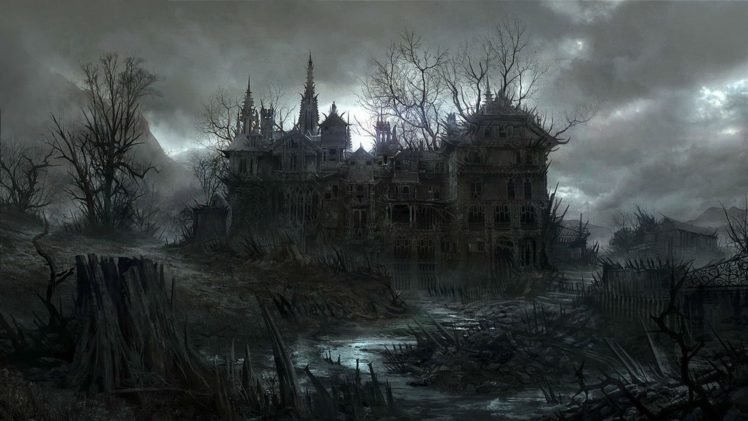

As they walk around the back it seems like they are people inside Gilman House they dont see they yet so they try and enter through the back to see if they can get anyones attention. there is also a disgusting smell coming from the house and they wonder whenthe last time someone spent a night at Gilman House.
